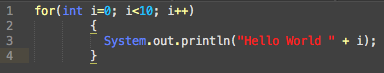

Die For-Schleife nimmt man immer dann, wenn man die Anzahl der benötigten Schleifen-Durchläufe schon im Voraus kennt.
Für die Vorschleife werden die folgenden drei Parameter benötigt:
Initialisierung
Zielwert
Schrittweite
Mit der Initialisierung legt man fest, ab welchen Wert man mit der Schleife startet. Die Schleife wird dann so lange
durchgeführt, bis der Zielwert erreicht oder überschritten wird. Wie schnell das geht, dass legt man mit der Schrittweite fest. Auf der rechten Seite sieht man die Syntax der for-Schleife.
Auf der rechten Seite eine konkrete Schleife die "Hello World" genau 10 mal ausgibt. Man überlegt sich als Startwert
gewöhnlicherweise die 0 oder die 1 in solch einem Fall (hier die 0). Soll "Hello World!" genau 10 mal ausgegben werden,
dann muss die Schleife 10 mal ausgeführt werden. Startet man nun mit einem Startwert bei der Initialisierung
von 0, dann ist der Zielwert <10. Die Schrittweise ist natürlich immer +1 also ++. Auf der rechten Seite nun die
komplette for-Schleife.
